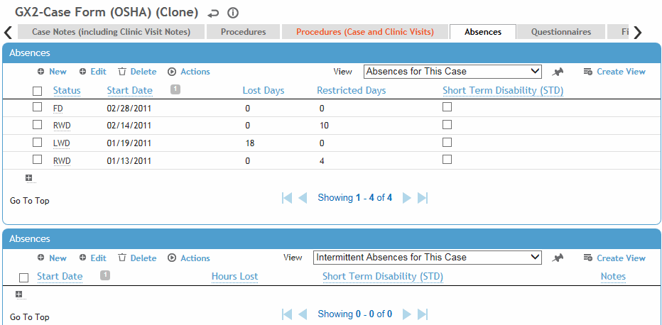
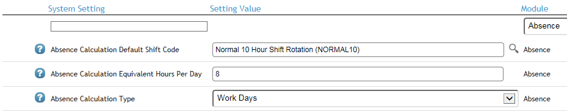
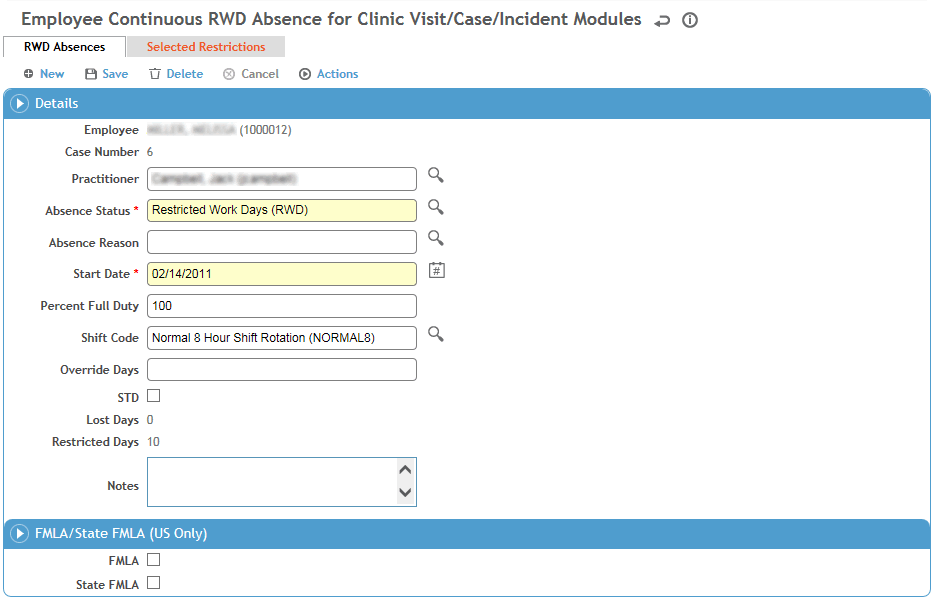
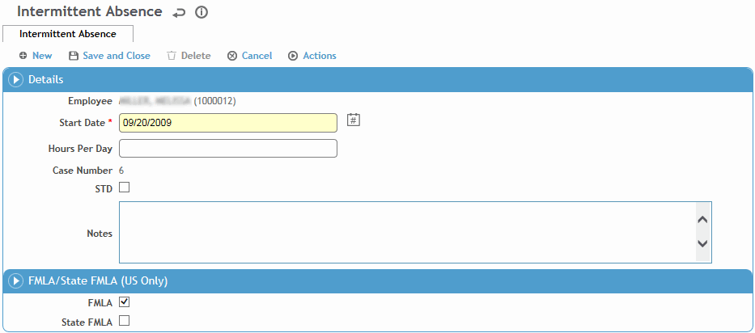

An employee’s absences can be recorded in the Clinic Visits, Incident, or Case Management modules. The Absences tab in each of these modules displays all of the employee’s continuous and intermittent absences, regardless of where they were entered.
If your Absence Calculation Type system setting is set to “Seven Calendar Days”, the number of lost work days includes the date of injury.
As a best practice, Cority recommends using the continuous absence section for full days lost (e.g. a start date of 7/25/2021 and a FD or RWD (some status that returns them to work) on 7/26/2021) instead of using intermittent absence for this purpose. Intermittent absence is designed to enter absences which are less than one full day.

FMLA provides an allotment of 480 hours for leave. This is based on the average 40 hour work week.
Cority typically calculates and displays absence time in “work days”, but the system setting can be configured to display “hours” or “shifts” instead.
When “work days” are used, Cority equalizes the calculation of days lost to take into account that people work different shift lengths, or may have intermittent absences of only a few hours. This is accomplished by using a standard fixed length work day of 8 hours. The assumption is that employees work an average of 40 hours per week (5 x 8 hours). If this is not the case, the average work day length should be defined in the "Absence Calculation Equivalent Hours Per Day" system setting. For example, if employees work 37.5 hours per week on average, the system setting would be set to 7.5 (37.5 5 = 7.5).
Cority calculates intermittent absences against FMLA using the (configurable) 8 hours value described above as the average length of a day. If the shift worked is 10 hours, Cority takes 10 and divides by 8 (the hard code value) to come up with a calculation of 1.25 days lost. If hours are used it is calculated as the actual value, or 10 in this example. By calculating the intermittent absence in this manner it equalizes the value of the FMLA time allowed between those who work longer shifts in fewer days, and those who work the average work week (40 hours - 8 hours per day, 5 days per week).

In the top section, click a link to edit, or click New.

When you enter a new restriction in the Clinic Visit or Case modules, you are asked if you want Cority to begin counting the number of restricted days. If you choose Yes, Cority creates an RWD absence with the same start date as the restriction entered, using the status defined in the system setting.
On the first tab, enter the following information:
If not already selected, select the Case Number and Practitioner.
Select the Absence Status (e.g. Lost Work, Restricted Work, Full Duty, Other, etc.). If there are no suitable statuses (defined in the AbsenceStatus look-up table) that reflect when an absence or restriction should be stopped, use Other and explain the actual status in the Notes section. Select the Absence Reason.
Select the Start Date.
If you are using the standard calculation method for time lost (as defined in your system settings; see Changing Your System Settings), enter the Percentage of Full Duty if necessary to indicate the employee worked part of the time on restricted duty and the rest of the time on full duty. You do not need to enter the % sign; if you wish you can enter the % sign for information purposes, but it won't be used in the calculation. If you are using the OSHA calculation method, you cannot enter this percentage, because OSHA counts a day as either lost or restricted.
Note: If a Default Percent Full Duty (RWD) is entered in the system settings, it appears here but you can edit it.
The Shift Code defaults to the shift code selected in the system settings unless the employee has an assigned shift, in which case the employee's own shift will appear; you can change this if necessary. Cority also checks the Holiday look-up table to see if there are any holidays in this period that apply to this employee.
The Lost Time and Restricted Time are automatically calculated by Cority. If you entered a value in the Override Days field, Cority will use this value instead of the calculated Lost/Restricted Time value on the OSHA 300 Log.
Indicate if this absence should count against Short Term Disability, FMLA or State FMLA totals.
You can select all three checkboxes for the same absence if appropriate, but you can only enter a continuous absence and an intermittent absence on the same day if the FMLA/STD checkboxes are different for each. For example: continuous absence for FMLA and intermittent absence for STD; this allows for cases where the FMLA or STD allotment period was met with a partial day.
If you want to create a related case record, complete the fields on the Case/Incident tab. If Date of Injury and Occupational are entered, an incident record is also created.
Click Save.
At any time you can view a history of all absences for the employee; see Viewing All Absences and Restrictions for an Employee.
If you have entered a Restricted Work Days absence status, an additional tab called Selected Restrictions will appear. Use this tab to add multiple restrictions in a single step to the employee. The start date of the restrictions will be populated with the start date of the Restricted Work Days absence record. For information about adding restrictions, see Recording Work Restrictions.
In the bottom section, click a link to edit, or click New.

Select the start date enter the number of Hours Per Day that the employee will be absent.
If this absence is related to an existing case, select the Case Number.
Indicate if this absence should count against Short Term Disability, FMLA or State FMLA totals.
You can select all three checkboxes for the same absence if appropriate, but you can only enter a continuous absence and an intermittent absence on the same day if the FMLA/STD checkboxes are different for each. For example: continuous absence for FMLA and intermittent absence for STD; this allows for cases where the FMLA or STD allotment period was met with a partial day.
Click Save.
At any time you can view a history of all absences for the employee; see Viewing All Absences and Restrictions for an Employee.